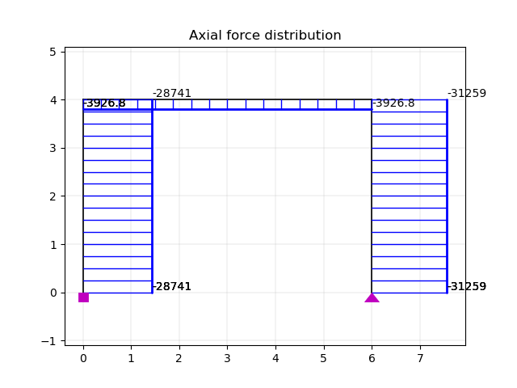
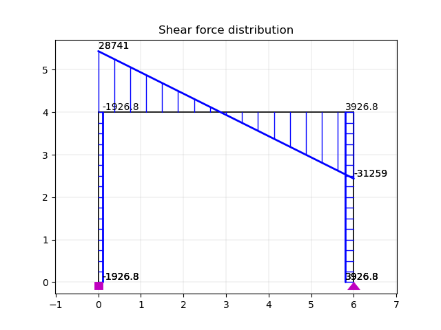
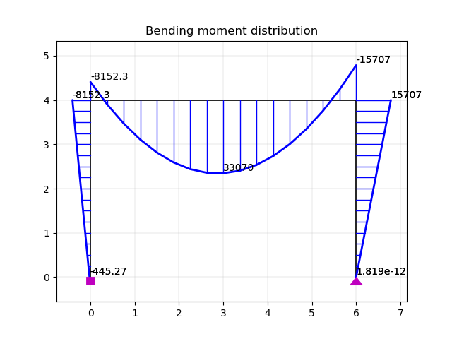
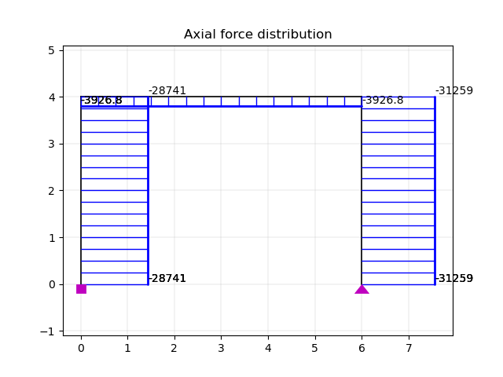
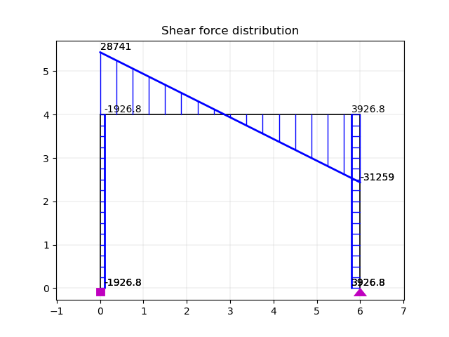
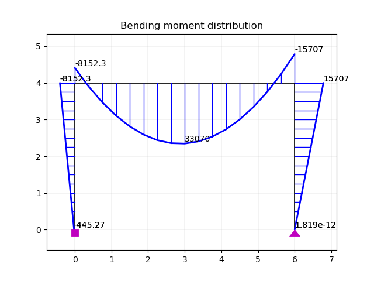

2d Portal Frame
Example .py file can be downloaded here:
 





1import openseespy.opensees as ops
2import opsvis as opsv
3
4import matplotlib.pyplot as plt
5
6ops.wipe()
7ops.model('basic', '-ndm', 2, '-ndf', 3)
8
9colL, girL = 4., 6.
10
11Acol, Agir = 2.e-3, 6.e-3
12IzCol, IzGir = 1.6e-5, 5.4e-5
13
14E = 200.e9
15
16Ep = {1: [E, Acol, IzCol],
17 2: [E, Acol, IzCol],
18 3: [E, Agir, IzGir]}
19
20ops.node(1, 0., 0.)
21ops.node(2, 0., colL)
22ops.node(3, girL, 0.)
23ops.node(4, girL, colL)
24
25ops.fix(1, 1, 1, 1)
26ops.fix(3, 1, 1, 0)
27
28opsv.plot_model()
29plt.title('plot_model before defining elements')
30
31ops.geomTransf('Linear', 1)
32
33# columns
34ops.element('elasticBeamColumn', 1, 1, 2, Acol, E, IzCol, 1)
35ops.element('elasticBeamColumn', 2, 3, 4, Acol, E, IzCol, 1)
36# girder
37ops.element('elasticBeamColumn', 3, 2, 4, Agir, E, IzGir, 1)
38
39Px = 2.e+3
40Wy = -10.e+3
41Wx = 0.
42
43Ew = {3: ['-beamUniform', Wy, Wx]}
44
45ops.timeSeries('Constant', 1)
46ops.pattern('Plain', 1, 1)
47ops.load(2, Px, 0., 0.)
48
49for etag in Ew:
50 ops.eleLoad('-ele', etag, '-type', Ew[etag][0], Ew[etag][1],
51 Ew[etag][2])
52
53ops.constraints('Transformation')
54ops.numberer('RCM')
55ops.system('BandGeneral')
56ops.test('NormDispIncr', 1.0e-6, 6, 2)
57ops.algorithm('Linear')
58ops.integrator('LoadControl', 1)
59ops.analysis('Static')
60ops.analyze(1)
61
62ops.printModel()
63
64opsv.plot_model()
65plt.title('plot_model after defining elements')
66
67opsv.plot_load()
68
69opsv.plot_reactions()
70
71# sfac = 80.
72
73opsv.plot_defo()
74# opsv.plot_defo(sfac)
75# fmt_interp = {'color': 'blue', 'linestyle': 'solid', 'linewidth': 1.2, 'marker': '.', 'markersize': 6}
76# opsv.plot_defo(sfac, fmt_interp=fmt_interp)
77
78# 4. plot N, V, M forces diagrams
79
80sfacN, sfacV, sfacM = 5.e-5, 5.e-5, 5.e-5
81
82opsv.section_force_diagram_2d('N', sfacN)
83plt.title('Axial force distribution')
84
85opsv.section_force_diagram_2d('T', sfacV)
86plt.title('Shear force distribution')
87
88opsv.section_force_diagram_2d('M', sfacM)
89plt.title('Bending moment distribution')
90
91plt.show()
92
93exit()